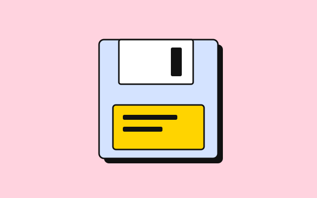

Component
Flare
Flare is everything a template adds beyond the contract. Thick adds five things from a shop counter: three tinted surfaces, a yellow band for the one thing you want the reader to do, a sticker, a tilt, and the pile. Four more are variants of contract components and live on their own pages: tinted cards, a tinted fifty-fifty, the flat button and the sticker badge. Markup that is only flare sits inside <div class="thick-flare">, so a template swap can strip it.
The pile
The signature. Put thick-pile on a <figure> around an image and it sits on a stack of outlined sheets, pink then blue, like zines on a counter. It is one box-shadow token, --thick-pile, five solid layers with no blur; the figure carries a right and bottom margin the size of the stack so nothing overlaps. The overview's hero uses it; the example puts it on the current issue.

<div class="thick-flare">
<figure class="thick-pile" style="max-width: 20rem"><img src="../../assets/card-2.svg" alt="" width="640" height="400"></figure>
</div>The band
A yellow block across the page, outlined, on the large shadow, with everything centred. One per page, for the one action that matters; a page with two bands has two most important things, which is none. Inside it the primary button turns to ink, because yellow on yellow is nothing.
Issue 12 ships Friday
Order before Thursday and it goes in the first post
Twelve pages, risograph, stapled by hand. Forty copies, then it is gone.
Order issue 12<div class="thick-flare">
<section class="thick-band">
<p class="kicker">Issue 12 ships Friday</p>
<h2>Order before Thursday and it goes in the first post</h2>
<p>Twelve pages, risograph, stapled by hand. Forty copies, then it is gone.</p>
<a class="btn btn-primary" href="#">Order issue 12</a>
</section>
</div>Tinted surfaces
thick-yellow, thick-pink and thick-blue tint any block. The yellow always carries black text and turns plain links inside it to ink; the pastels keep the page text and go dusky after dark so it still clears 4.5:1. On a card or a fifty-fifty the same classes tint the whole component; see their pages. The inline styles below only give the boxes an outline for the demonstration; the classes set colour and nothing else.
<div class="thick-flare">
<div class="grid-3">
<div class="thick-yellow" style="padding: 1rem; border: 3px solid var(--border-color); border-radius: 8px">Yellow. Black text in both halves.</div>
<div class="thick-pink" style="padding: 1rem; border: 3px solid var(--border-color); border-radius: 8px">Pink. The page text, dusky after dark.</div>
<div class="thick-blue" style="padding: 1rem; border: 3px solid var(--border-color); border-radius: 8px">Blue. The same, in blue.</div>
</div>
</div>The sticker
thick-sticker on any small element: pink, tilted five degrees, on a 3px shadow. On a .badge it keeps the badge's colour classes (badge page). A sticker should say something true, a count or a price or a date, not "new". A sticker that is a direct child of .hero pins itself to the hero's top edge.
Issue 12 40 copies
<div class="thick-flare">
<h3>Issue 12 <span class="thick-sticker">40 copies</span></h3>
</div>The tilt
thick-tilt turns any inline element three degrees and nothing else, for a label that wants to look stuck on without the sticker's colour and shadow.
Back in stock The tilt on its own is three degrees; the sticker is five and adds the shadow.
<div class="thick-flare">
<p><span class="thick-tilt badge badge-active">Back in stock</span> The tilt on its own is three degrees; the sticker is five and adds the shadow.</p>
</div>Classes
The rules live in css/global.css under /* == flare == */, except the four variants, which sit with their components.
| Class | Purpose |
|---|---|
.thick-flare | The wrapper for flare that is markup; strip it when swapping templates |
.thick-pile | A figure on a stack of outlined sheets (--thick-pile) |
.thick-band | The yellow call-to-action block |
.thick-yellow, .thick-pink, .thick-blue | Tinted surfaces; also card and fifty-fifty variants (global.css § cards, § fifty-fifty) |
.thick-sticker | Pink, tilted, on a shadow; also a badge variant (global.css § badge) |
.thick-tilt | Three degrees, nothing else |
.btn.thick-flat | A button with no shadow (global.css § buttons) |
Notes
- Every colour here is a token in
theme.css:--thick-yellow,--thick-on-yellow,--thick-pink,--thick-blue,--thick-inkand--thick-pile. Nothing inglobal.cssnames a colour. - Nothing here moves on its own. The only motion in the template is the press: a 120ms transition on
transformandbox-shadowwhen you hover or hold a button, a thumbnail, a text field or the feature card. The globalprefers-reduced-motionrule shortens all of it to nothing, so the element still moves, but jumps rather than slides. - Stickers and tilted labels are text and stay readable to assistive technology; the tilt is a transform and changes nothing about the reading order.
- Do not put a sticker inside a button or a link: two shadows that press at different times look broken.